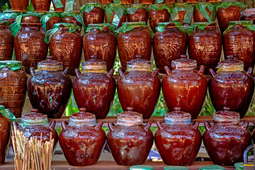

Banlung market
Browse cooked food and produce, and ask vendors what is available today. Prices and selection vary.

Food & local markets
Explore local markets and learn about food from the people who grow, prepare and share it.
Menus and ingredients change by seller, household and season. Ask the person preparing a dish for its local name and ingredients; this site does not guess where details are not documented.
Browse cooked food and produce, and ask vendors what is available today. Prices and selection vary.
What is grown and sold changes through the year. Ask sellers for local names, growing seasons and how an ingredient is prepared.
Food traditions differ between households and communities. Join a meal only by invitation, and ask about ingredients if you have allergies.
The current project collection does not include verified dish photos or recipes. Rather than guess, use a market visit or an invited meal to learn what people grow, cook and call each dish.
Names and ingredients can vary between communities and households. Ask the cook or vendor how they describe a dish.
Availability changes throughout the year. Local sellers can tell you what is fresh and where it comes from.
Banlung is a practical place to begin exploring local food. Community meals are personal and should be joined only by invitation.
Ask vendors what is freshly prepared, what ingredients are used and whether a dish contains anything you avoid.
Follow your host's invitation and guidance. Ask before photographing a meal or sharing a story about it.
Explain allergies clearly and confirm ingredients directly with the person preparing your food.